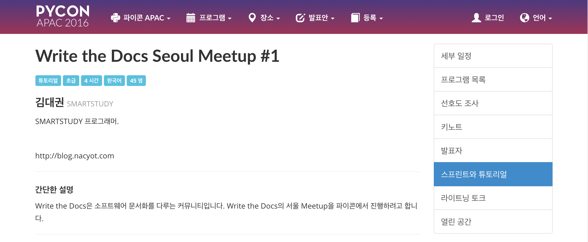
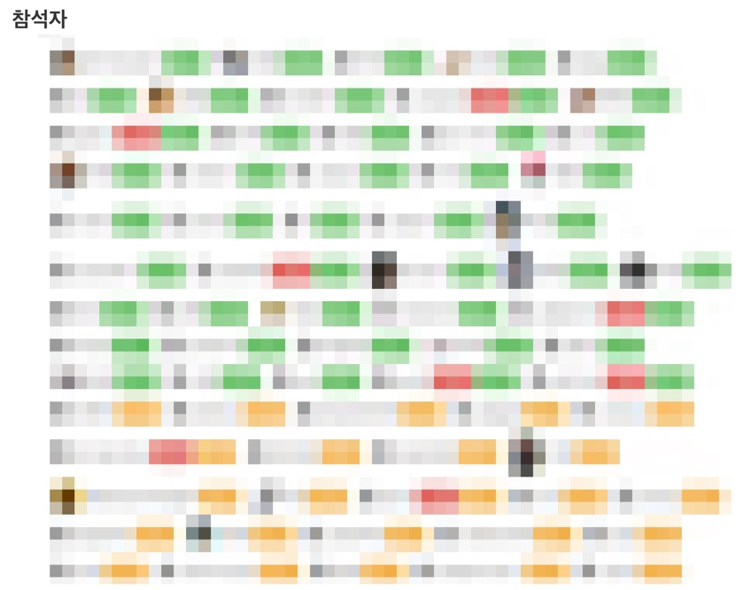

WriteTheDocs 서울 모임 후기
기
nacyot님께서 WriteTheDocs라는 커뮤니티를 소개해 주신 이후, 우리나라에서도 한 번 해보자는 의견을 주고 받은 적이 있다.
내년에나 한 번 해보려나... 하고 있었는데 옆에서 이야기듣던 scari님이 이번 PyConAPAC에서 장소를 제공받아보면 어떠냐고 하셔서 급 물살.
승
그리고 진짜로 페이지가 열렸다.

(아... 일은 원래 내가 원하지 않을 때 가장 빨리 진행되나보다.)
그래서 막 트위터 계정도 만들고, 페이스북 페이지도 만들고...
2016 WriteTheDocsSeoul이 PyCon APAC의 부대 행사로 열리게 되었습니다.https://t.co/UDEVtCJWJV pic.twitter.com/9kEcZmcrg9
— Write The Docs Seoul (@WTDSeoul) 2016년 8월 11일
이제 중요한 건 내용! 부랴부랴 세션 맡을 분을 모으고 아는 분들께 참석해달라는 메일을 보내면서도, **사람들이 오기는 할까?**하는 불안감이 많았는데, 막상 등록 버튼이 생기자마자 걱정할 필요가 없을 만큼 사람들이 많이 눌러줬다. (하지만 나중에 보니까 일단 눌러놓고 보는 분이 많았던...)
초록색이 등록자고 노란색은 대기자. (**대기하는 사람까지 있다니!**라며 기뻐했다.)

하지만 세션 발표에 이름과 주제를 올려놓은 나는 정작 발표 준비를 전혀 못하고, 회사의 행사로 끌려다니기 바빴고... 일요일엔 가족과 함께 시간을 보내고 뻗어버린 터라 세션 준비는 월요일 새벽에 시작... ㅡㅡ;
제목부터가 '실험'인지라 자료만 대충 때려넣자는 심정이었는데, 이걸 맥락이 이어지게 배치하고 수위를 적절히 조절하는 일이 꽤 어려웠다.
전
그래도 어찌어찌 겨우 발표 준비를 마치고 행사 시작.
Just started! #writethedocs pic.twitter.com/9FwqDbNXLE
— Write The Docs Seoul (@WTDSeoul) 2016년 8월 15일
결
행사는 잘 끝났고, 이제 WriteTheDocs 서울 모임이 정기적 혹은 비정기적으로 잘 모일 일만 남았다. (이게 더 큰일이긴 하다...)